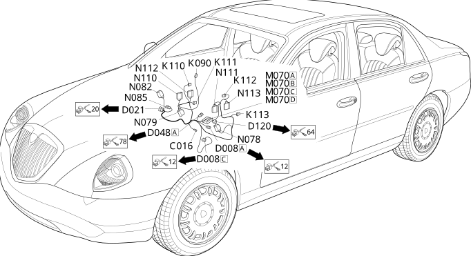

65 air conditioning
- Path
- Electrical equipment > Wiring > 65 air conditioning
- Kind
- wiring harness
- Applies to
- all engines; all production periods
- Interactive page
- https://sloeber94.github.io/elrnDB-lThss/en/#/207396
Applies to: all engines; all production periods

Topics that link to this page (27)
- C016A Air conditioning unit earth(AIR CONDITIONING)
- C016B Air conditioning unit earth(AIR CONDITIONING)
- D008A Air conditioning-heater front coupling(FRONT)
- D008B Air conditioning-heater front coupling(FRONT)
- D008C Air conditioning-heater front coupling(FRONT)
- D021 Dashboard/air conditioning-heater coupling(DASHBOARD)
- D048A Console/centre bridge coupling(CENTRE CONSOLE BRIDGE)
- D120 Climate control/diffused air device coupling(AIR CONDITIONING)
- K090 Solar sensor(AIR CONDITIONING)
- K110 Right upper air distribution temperature sensor(AIR CONDITIONING)
- K111 Right lower air distribution temperature sensor(AIR CONDITIONING)
- K112 Left upper air distribution temperature sensor(AIR CONDITIONING)
- K113 Left lower air distribution temperature sensor(AIR CONDITIONING)
- M070A Climate control system control unit(AIR CONDITIONING)
- M070B Climate control sytem control unit(AIR CONDITIONING)
- M070C Climate control sytem control unit(AIR CONDITIONING)
- M070D Climate control sytem control unit(AIR CONDITIONING)
- N078 Left mixed air flap actuator(AIR CONDITIONING)
- N079 Right mixed air flap actuator(AIR CONDITIONING)
- N082 Outside air/recirculation intake flap actuator(AIR CONDITIONING)
- N085 Passenger compartment air fan(AIR CONDITIONING)
- N110 Right defrost air distribution actuator(AIR CONDITIONING)
- N111 Left defrost air distribution actuator(AIR CONDITIONING)
- N112 Right air distribution actuator(AIR CONDITIONING)
- N113 Left air distribution actuator(AIR CONDITIONING)
- O025A Additional heater resistance(AIR CONDITIONING)
- O025B Additional heater resistance(AIR CONDITIONING)